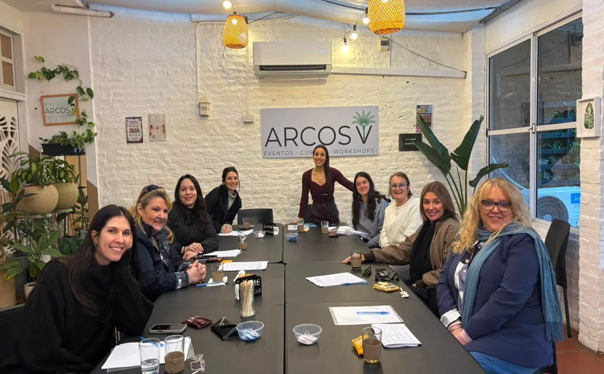
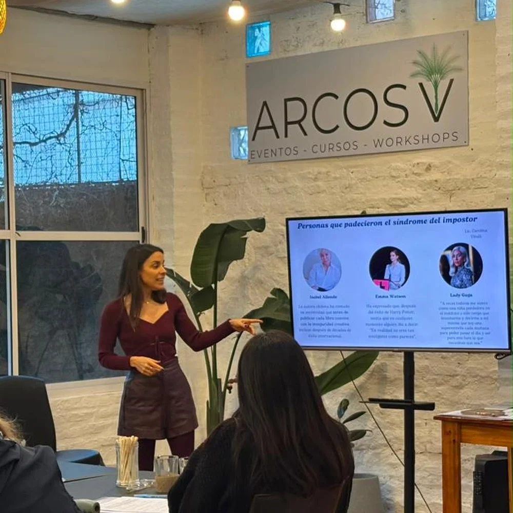
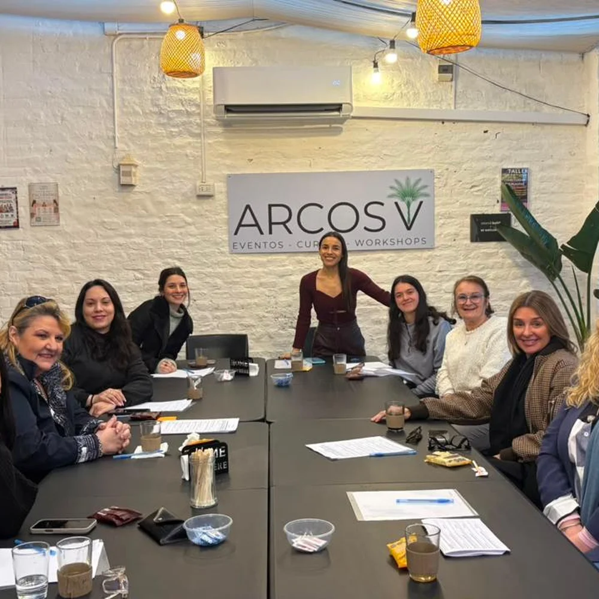
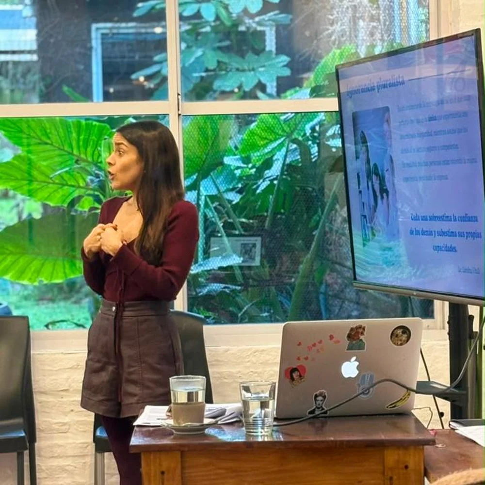

ENCUENTRODespués de agotar los lugares en agosto, vuelve el encuentro sobre la autoexigencia que no afloja, el perfeccionismo, la culpa, la autoestima y el síndrome del impostor. Cupos limitados.
Reservar por WhatsAppCarolina es psicóloga cognitiva y en cada edición propone un tema y lo abre a la conversación. No es una charla magistral ni una terapia grupal: es un espacio guiado para mujeres que están atravesando cosas parecidas, y donde se habla de lo que casi nunca se dice en voz alta.
Se hace en una sola mesa larga, a puertas cerradas y en grupo reducido. Podés participar todo lo que quieras o simplemente escuchar; nadie tiene que exponer nada. Hay una pausa en el medio para compartir un café.
Cada encuentro dura alrededor de dos horas, aunque la charla casi siempre se estira un rato más. Se puede venir sola o con una amiga, y no hace falta haber ido a ninguna edición anterior.
Por Arcos V ya pasó una primera edición dedicada a la autoexigencia y el síndrome del impostor.
Cuando sentís que no alcanza
Agosto 2026



Las consultas e inscripciones las gestiona directamente Carolina.
Consultar por WhatsApp